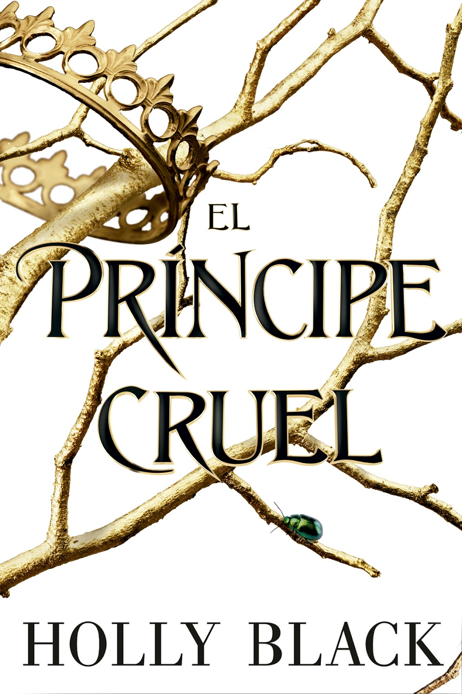

Libros de fantasia
El principe Cruel

si te enamoraras del enemigo en una corte de hadas donde la crueldad es un arte? El príncipe cruel te sumerge de lleno en el peligroso mundo de Elfhame de la mano de Jude, una humana criada en un reino de criaturas inmortales que desprecian a los mortales.
Para sobrevivir, Jude tendrá que aprender a mentir, luchar y ser más astuta que la realeza feérica, especialmente que Cardan, el príncipe arrogante y cruel que parece decidido a hacerle la vida imposible.
Una historia adictiva llena de tensión, traiciones palaciegas, manipulación y un enemies-to-lovers que no te va a dejar soltar el libro hasta la última página.
Nacidos de la bruma

¿Y si el Elegido hubiera fracasado y el mundo estuviera condenado a vivir bajo la ceniza y la tiranía?.
Nacidos de la bruma te arranca de inmediato a un imperio oscuro donde los nobles oprimen sin piedad a los esclavos skaa y la niebla lo cubre todo al caer el sol. La historia sigue a Vin, una ladrona callejera que descubre que tiene un poder extraordinario: puede "quemar" metales en su cuerpo para ganar fuerza, leer emociones o surcar los cielos volando entre las sombras.
Junto a un grupo de criminales carismáticos y un plan suicida, intentará lo imposible: derrocar al Lord Legislador, un dios inmortal que gobierna con mano de hierro desde hace mil años.
Un sistema de magia increíble, giros de trama que te dejan mirando el techo y una fantasía épica que no vas a poder soltar.